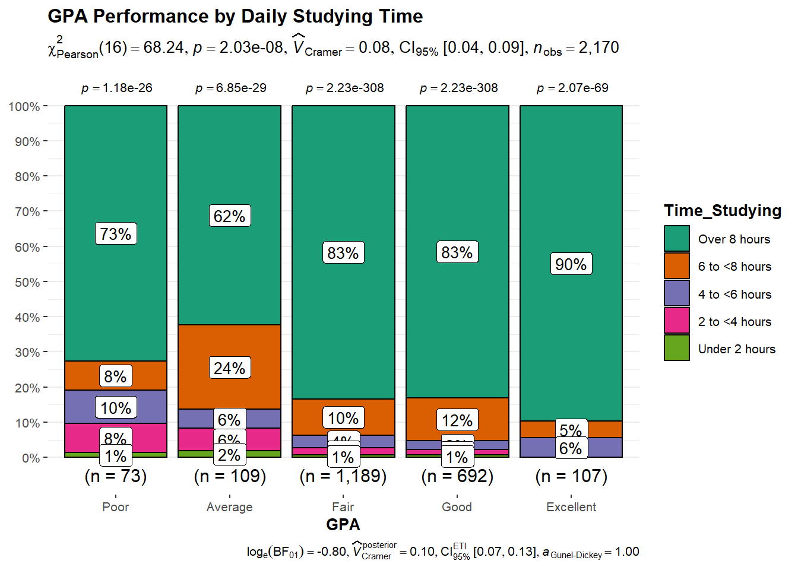
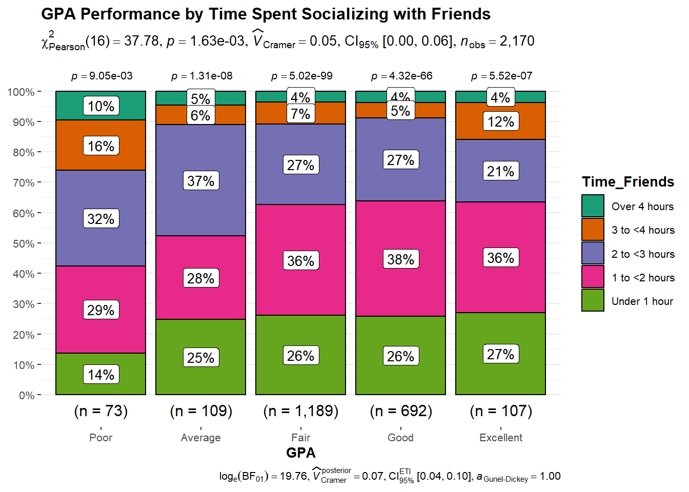
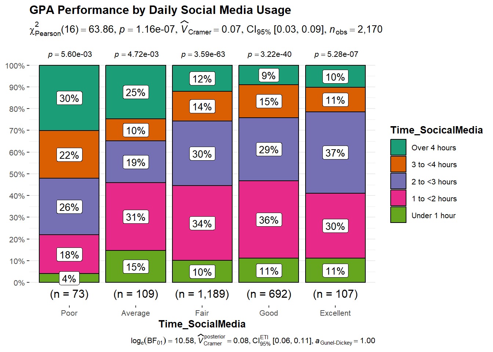
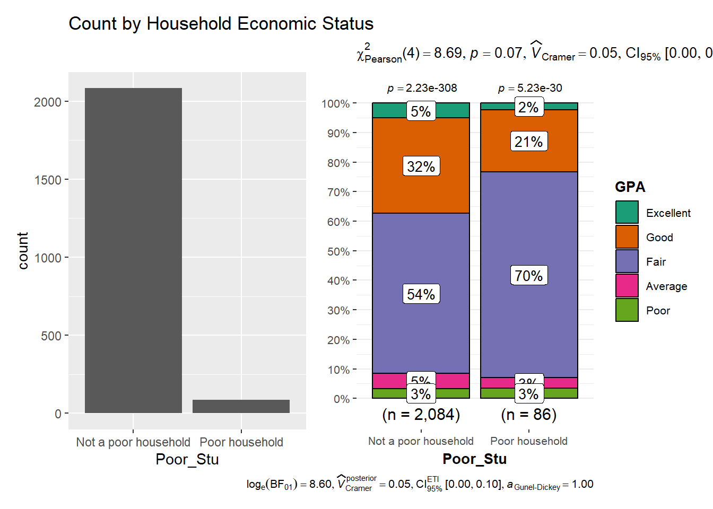
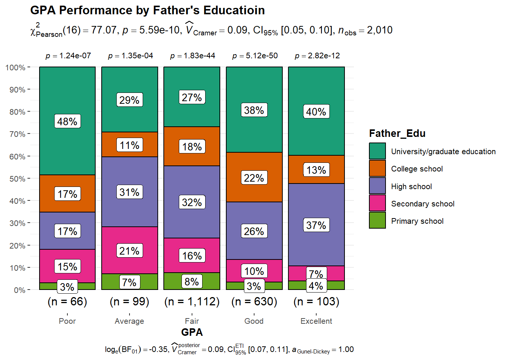
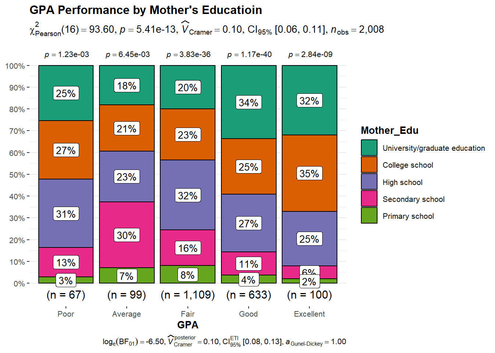
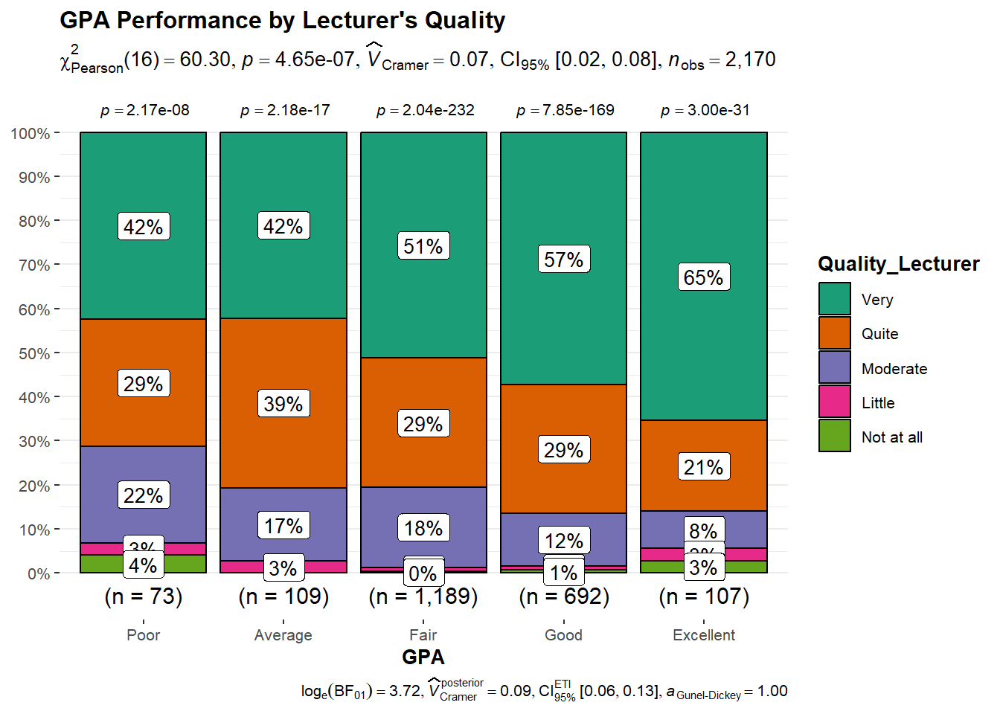
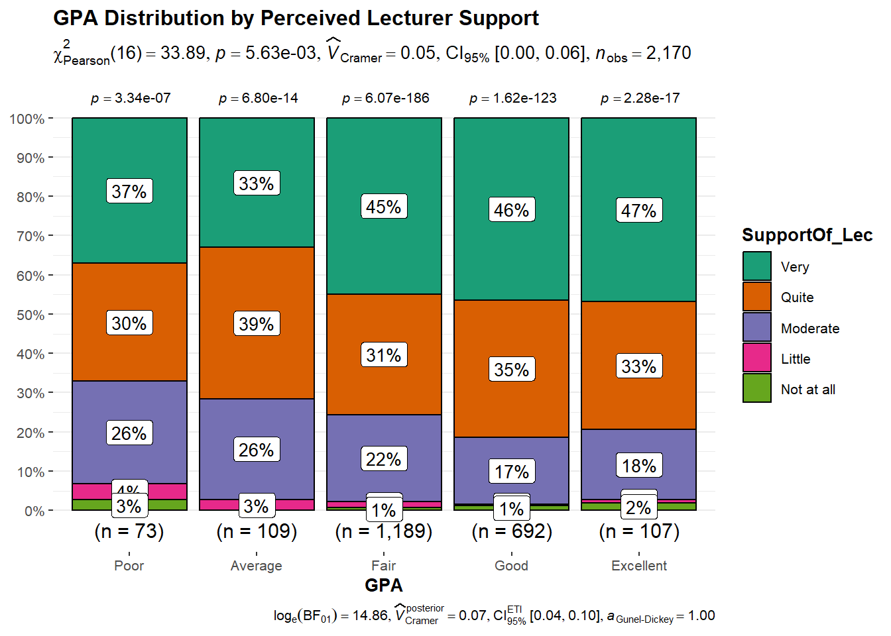
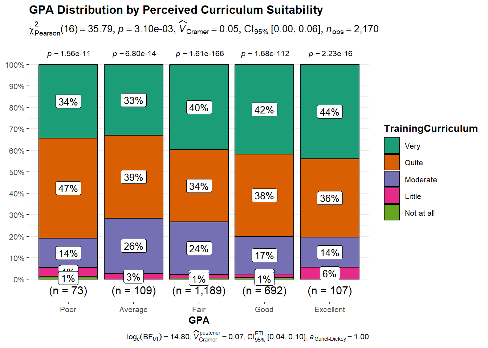

pacman::p_load(tidyverse, haven,
ggrepel, ggthemes,
ggridges, ggdist,
patchwork, scales,
readxl, plotly,
ggstatsplot)Take-home Exercise 1
Overview
Setting the scene
Understanding the factors that influence students’ learning outcomes is a key concern in higher education. This dataset focuses on students from Vietnam National University in 2023 and is based on 2,170 completed survey responses covering 22 variables. The survey structure mainly includes three aspects: students’ background characteristics, their daily behavioral patterns, and their perceptions of the resources and support provided by the university. This study examines how these three dimensions are associated with students’ GPA performance.
Problem Statement
In this exercise, Exploratory Data Analysis (EDA) methods and ggplot functions and hypothesis tests are used to explore the following questions:
How does students’ time allocation influence their learning outcomes?
Is there a relationship between students’ family and socioeconomic background and their academic performance?
Do university resources, such as curriculum design and lecturer quality, have an impact on students’ academic performance?
Getting Started
Load Package
We load the following R packages using the pacman::p_load() function:
tidyverse: Core collection of R packages designed for data science
haven: To read in data formats such as SAS and SPSS
ggrepel: to provides geoms for ggplot2 to repel overlapping text labels
ggthemes: to use additional themes for ggplot2
patchwork: to prepare composite figure created using ggplot2
ggridges: to plot ridgeline plots
ggdist: for visualizations of distributions and uncertainty
scales: provides the internal scaling infrastructure used by ggplot2
readxl: provides functions to read Excel files (.xls and .xlsx) into R
plotly: R library for plotting interactive statistical graphs.
ggstatsplot: an R package for creating statistical graphics with embedded inferential statistics
Import Data
The dataset used in this exercise is questionnaire data collected from students at Vietnam National University and retrieved from Mendeley Data. The dataset is imported into R and named stu_data.
stu_data <- read_excel("data/Database paper.xlsx")Data Pre-processing
We first perform an overview of the dataset to assess whether any data adjustments are required.
glimpse(stu_data)Rows: 2,170
Columns: 22
$ Year <dbl> 5, 5, 5, 5, 5, 5, 5, 5, 5, 5, 5, 5, 5, 5, 5, 5, 5, …
$ Gender <dbl> 2, 1, 2, 2, 1, 2, 2, 2, 2, 2, 1, 2, 2, 2, 2, 2, 2, …
$ Policy_Stu <dbl> 2, 2, 2, 2, 1, 2, 2, 2, 2, 2, 2, 2, 2, 1, 2, 2, 2, …
$ Minority_Stu <dbl> 2, 2, 2, 2, 2, 2, 2, 2, 2, 2, 2, 2, 2, 2, 2, 2, 2, …
$ Poor_Stu <dbl> 2, 2, 2, 2, 2, 2, 2, 2, 2, 2, 2, 2, 2, 2, 2, 2, 2, …
$ Father_Edu <dbl> 4, 3, 4, 5, 2, 5, 6, 5, 5, 5, 3, 3, 3, 3, 3, 4, 5, …
$ Mother_Edu <dbl> 4, 3, 4, 4, 3, 5, 5, 4, 5, 4, 3, 3, 3, 4, 3, 4, 5, …
$ Father_Occupation <dbl> 2, 2, 1, 1, 3, 1, 1, 5, 1, 3, 3, 3, 3, 3, 2, 2, 4, …
$ Mother_Occupation <dbl> 3, 4, 2, 1, 3, 2, 4, 3, 1, 3, 3, 3, 3, 3, 2, 2, 4, …
$ Time_Friends <dbl> 2, 1, 1, 2, 1, 1, 2, 2, 1, 3, 2, 2, 2, 2, 2, 1, 3, …
$ Time_SocicalMedia <dbl> 2, 3, 2, 2, 2, 3, 2, 2, 2, 2, 2, 1, 2, 2, 2, 3, 4, …
$ Time_Studying <dbl> 5, 5, 5, 5, 1, 2, 5, 5, 5, 5, 5, 5, 5, 1, 5, 5, 5, …
$ GPA <dbl> 4, 3, 4, 4, 4, 4, 3, 5, 5, 3, 3, 4, 4, 3, 5, 4, 4, …
$ Adapt_Learning_Uni <dbl> 4, 3, 4, 4, 5, 4, 4, 4, 4, 3, 4, 4, 4, 5, 4, 4, 5, …
$ Study_Methods <dbl> 4, 3, 4, 4, 5, 4, 4, 4, 4, 4, 4, 4, 4, 5, 4, 3, 5, …
$ SupportOf_Uni <dbl> 3, 3, 4, 5, 5, 5, 5, 5, 4, 5, 4, 4, 4, 5, 4, 4, 5, …
$ SupportOf_Lec <dbl> 4, 4, 4, 5, 5, 4, 5, 4, 4, 5, 4, 4, 4, 5, 4, 4, 5, …
$ Facilitie_Uni <dbl> 4, 4, 3, 5, 5, 5, 5, 4, 4, 5, 4, 4, 4, 5, 4, 3, 5, …
$ Quality_Lecturer <dbl> 4, 3, 4, 5, 5, 5, 4, 5, 5, 5, 4, 4, 4, 5, 4, 4, 5, …
$ TrainingCurriculum <dbl> 4, 3, 4, 4, 5, 4, 5, 4, 4, 5, 4, 4, 4, 5, 4, 3, 5, …
$ Competitive_Class <dbl> 3, 3, 4, 4, 4, 3, 4, 3, 4, 4, 4, 4, 4, 5, 4, 4, 5, …
$ InfuenceF_Friends <dbl> 3, 4, 4, 4, 5, 3, 5, 4, 4, 4, 4, 4, 4, 5, 4, 5, 4, …
NoteInsight
All variables in the dataset are currently stored as <dbl> (double) types. However, the data mainly consists of categorical variables, including binary, ordinal, and nominal responses. In the subsequent analysis, variables will be recoded and relabeled as needed to better reflect their categorical meanings during visualization.
Check for duplicates
Duplicate removal is not performed in this exercise, as the questionnaire-based data does not include a unique identifier (e.g., student ID). Identical response patterns may reflect different students with similar characteristics rather than true duplicate entries. As such, all observations are retained for analysis.
Check and Handle Missing Values
A check for missing values shows that no variables contain NA values. Therefore, no additional missing value handling is required.
for(column_name in names(stu_data)) {
na_count <- sum(is.na(stu_data[[column_name]]))
if (na_count > 0) {
message("Column '", column_name, "' has ", na_count, " NA values.")
}
}Filtering data for selected variables
Next, we want to reduce the size of the dataset to focus on the variables that would be suitable for this exercise. Primarily referred to the CODEBOOK file on Mendeley Data.
The primary columns/variables that will be used in this exercise are:
| Variable Name | Description | Type of Variable |
|---|---|---|
| GPA | (Target Variable) Cumulative grade point average (GPA) 1: Under 2.0 – Poor 2: From 2.0 to lower 2.5 – Average 3: From 2.5 to lower 3.2 – Fair 4: From 3.2 to lower 3.6 – Good 5: Over 3.6 – Excellent |
Ordinal |
| Time_Friends | (Time allocation) Daily time spent hanging out with friends 1: under 1 hour 2: from 1 to lower 2 hours 3: from 2 to lower 3 hours 4: from 3 to lower 4 hours 5: over 4 hours |
Ordinal |
| Time_SocicalMedia | (Time allocation) Daily time spent using social media 1: under 1 hour 2: from 1 to lower 2 hours 3: from 2 to lower 3 hours 4: from 3 to lower 4 hours 5: over 4 hours |
Ordinal |
| Time_Studying | (Time allocation) Daily time spent studying 1: under 2 hours 2: from 2 to lower 4 hours 3: from 4 to lower 6 hours 4: from 6 to lower 8 hours 5: over 8 hours |
Ordinal |
| Poor_Stu | (Socioeconomic background) Family economic status 1: Yes – poor household 2: No – not a poor household |
Binary |
| Father_Edu | (Socioeconomic background) Father’s educational background 1: Primary school 2: Secondary school 3: High school 4: College school 5: University/graduate education 6: Other |
Ordinal |
| Mother_Edu | (Socioeconomic background) Mother’s educational background 1: Primary school 2: Secondary school 3: High school 4: College school 5: University/graduate education 6: Other |
Ordinal |
| SupportOf_Lec | (Learning environment) Perceived level of lecturer support affecting learning outcomes 1: Not at all 2: Little 3: Moderate 4: Quite 5: Very |
Ordinal |
| Quality_Lecturer | (Learning environment) Perceived quality of university lecturers 1: Not at all 2: Little 3: Moderate 4: Quite 5: Very |
Ordinal |
| TrainingCurriculum | (Learning environment) Perceived suitability of the university curriculum 1: Not at all 2: Little 3: Moderate 4: Quite 5: Very |
Ordinal |
We filter the dataset stu_data to retain only the variables relevant to this analysis and store the resulting data as stu_data_filtered.
stu_data_filtered <- stu_data %>%
select(GPA, Time_Friends, Time_SocicalMedia, Time_Studying, Poor_Stu,
Father_Edu, Mother_Edu, SupportOf_Lec, Quality_Lecturer, TrainingCurriculum)Recode Variables
Binary Variables Processing
Poor_Stu is originally stored as
<dbl>, although it represents a nominal categorical variable. A value of 1 indicates a poor household and 2 indicates a non-poor household. The variable is therefore recoded, converted to<chr>.
stu_data_filtered <- stu_data_filtered %>%
mutate(Poor_Stu = recode(as.character(Poor_Stu), '1' = 'Poor household', '2' = 'Not a poor household'))Ordinal Variables Processing
The remaining variables are treated as ordinal categorical variables. Recoding and ordering are applied to preserve the meaningful sequence of response levels. For Father_Edu and Mother_Edu, the “Other” category is retained in the data but excluded from the ordinal ordering, as it does not correspond to a defined educational level.
# GPA
stu_data_filtered <- stu_data_filtered %>%
mutate(GPA = recode(as.character(GPA),
'1' = "Poor",
'2' = "Average",
'3' = "Fair",
'4' = "Good",
'5' = "Excellent"))
stu_data_filtered$GPA <- ordered(stu_data_filtered$GPA,
levels = c("Poor", "Average", "Fair", "Good", "Excellent"))
# Time_Friends
stu_data_filtered <- stu_data_filtered %>%
mutate(Time_Friends = recode(as.character(Time_Friends),
'1' = "Under 1 hour",
'2' = "1 to <2 hours",
'3' = "2 to <3 hours",
'4' = "3 to <4 hours",
'5' = "Over 4 hours"))
stu_data_filtered$Time_Friends <- ordered(stu_data_filtered$Time_Friends,
levels = c("Under 1 hour", "1 to <2 hours", "2 to <3 hours", "3 to <4 hours", "Over 4 hours"))
# Time_SocicalMedia
stu_data_filtered <- stu_data_filtered %>%
mutate(Time_SocicalMedia = recode(as.character(Time_SocicalMedia),
'1' = "Under 1 hour",
'2' = "1 to <2 hours",
'3' = "2 to <3 hours",
'4' = "3 to <4 hours",
'5' = "Over 4 hours"))
stu_data_filtered$Time_SocicalMedia <- ordered(stu_data_filtered$Time_SocicalMedia,
levels = c("Under 1 hour", "1 to <2 hours", "2 to <3 hours", "3 to <4 hours", "Over 4 hours"))
# Time_Studying
stu_data_filtered <- stu_data_filtered %>%
mutate(Time_Studying = recode(as.character(Time_Studying),
'1' = "Under 2 hours",
'2' = "2 to <4 hours",
'3' = "4 to <6 hours",
'4' = "6 to <8 hours",
'5' = "Over 8 hours"))
stu_data_filtered$Time_Studying <- ordered(stu_data_filtered$Time_Studying,
levels = c("Under 2 hours", "2 to <4 hours", "4 to <6 hours", "6 to <8 hours", "Over 8 hours"))
# Father_Edu
stu_data_filtered <- stu_data_filtered %>%
mutate(Father_Edu = recode(as.character(Father_Edu),
'1' = "Primary school",
'2' = "Secondary school",
'3' = "High school",
'4' = "College school",
'5' = "University/graduate education",
'6' = "Other"))
stu_data_filtered$Father_Edu <- ordered(
stu_data_filtered$Father_Edu,
levels = c("Primary school", "Secondary school", "High school", "College school", "University/graduate education"))
# Mother_Edu
stu_data_filtered <- stu_data_filtered %>%
mutate(Mother_Edu = recode(as.character(Mother_Edu),
'1' = "Primary school",
'2' = "Secondary school",
'3' = "High school",
'4' = "College school",
'5' = "University/graduate education",
'6' = "Other"))
stu_data_filtered$Mother_Edu <- ordered(stu_data_filtered$Mother_Edu,
levels = c("Primary school", "Secondary school", "High school", "College school", "University/graduate education"))
# SupportOf_Lec
stu_data_filtered <- stu_data_filtered %>%
mutate(SupportOf_Lec = recode(as.character(SupportOf_Lec),
'1' = "Not at all",
'2' = "Little",
'3' = "Moderate",
'4' = "Quite",
'5' = "Very"))
stu_data_filtered$SupportOf_Lec <- ordered(stu_data_filtered$SupportOf_Lec,
levels = c("Not at all", "Little", "Moderate", "Quite", "Very"))
# Quality_Lecturer
stu_data_filtered <- stu_data_filtered %>%
mutate(Quality_Lecturer = recode(as.character(Quality_Lecturer),
'1' = "Not at all",
'2' = "Little",
'3' = "Moderate",
'4' = "Quite",
'5' = "Very"))
stu_data_filtered$Quality_Lecturer <- ordered(stu_data_filtered$Quality_Lecturer,
levels = c("Not at all", "Little", "Moderate", "Quite", "Very"))
# TrainingCurriculum
stu_data_filtered <- stu_data_filtered %>%
mutate(TrainingCurriculum = recode(as.character(TrainingCurriculum),
'1' = "Not at all",
'2' = "Little",
'3' = "Moderate",
'4' = "Quite",
'5' = "Very"))
stu_data_filtered$TrainingCurriculum <- ordered(stu_data_filtered$TrainingCurriculum,
levels = c("Not at all", "Little", "Moderate", "Quite", "Very"))Preview pre-processed dataframe
At this stage, all variables have been transformed into <ord> or <chr> types. All original numeric codes have been successfully recoded into descriptive categorical labels.
glimpse(stu_data_filtered)Rows: 2,170
Columns: 10
$ GPA <ord> Good, Fair, Good, Good, Good, Good, Fair, Excellent…
$ Time_Friends <ord> 1 to <2 hours, Under 1 hour, Under 1 hour, 1 to <2 …
$ Time_SocicalMedia <ord> 1 to <2 hours, 2 to <3 hours, 1 to <2 hours, 1 to <…
$ Time_Studying <ord> Over 8 hours, Over 8 hours, Over 8 hours, Over 8 ho…
$ Poor_Stu <chr> "Not a poor household", "Not a poor household", "No…
$ Father_Edu <ord> College school, High school, College school, Univer…
$ Mother_Edu <ord> College school, High school, College school, Colleg…
$ SupportOf_Lec <ord> Quite, Quite, Quite, Very, Very, Quite, Very, Quite…
$ Quality_Lecturer <ord> Quite, Moderate, Quite, Very, Very, Very, Quite, Ve…
$ TrainingCurriculum <ord> Quite, Moderate, Quite, Quite, Very, Quite, Very, Q…head(stu_data_filtered, 200)# A tibble: 200 × 10
GPA Time_Friends Time_SocicalMedia Time_Studying Poor_Stu Father_Edu
<ord> <ord> <ord> <ord> <chr> <ord>
1 Good 1 to <2 hours 1 to <2 hours Over 8 hours Not a poo… College s…
2 Fair Under 1 hour 2 to <3 hours Over 8 hours Not a poo… High scho…
3 Good Under 1 hour 1 to <2 hours Over 8 hours Not a poo… College s…
4 Good 1 to <2 hours 1 to <2 hours Over 8 hours Not a poo… Universit…
5 Good Under 1 hour 1 to <2 hours Under 2 hours Not a poo… Secondary…
6 Good Under 1 hour 2 to <3 hours 2 to <4 hours Not a poo… Universit…
7 Fair 1 to <2 hours 1 to <2 hours Over 8 hours Not a poo… <NA>
8 Excellent 1 to <2 hours 1 to <2 hours Over 8 hours Not a poo… Universit…
9 Excellent Under 1 hour 1 to <2 hours Over 8 hours Not a poo… Universit…
10 Fair 2 to <3 hours 1 to <2 hours Over 8 hours Not a poo… Universit…
# ℹ 190 more rows
# ℹ 4 more variables: Mother_Edu <ord>, SupportOf_Lec <ord>,
# Quality_Lecturer <ord>, TrainingCurriculum <ord>[Topic 1] How does students’ time allocation influence their learning outcomes?
[Observation 1] Higher GPA Levels Are Concentrated Among Students with Longer Study Time

H₀ (Null Hypothesis) : There is no association between GPA and studying time.
H₁ (Alternative Hypothesis) : There is an association between GPA and studying time.
ggbarstats(stu_data_filtered,
x = Time_Studying,
y = GPA)+
labs(title = "GPA Performance between different time-studying group")The chi-square test shows a statistically significant association between daily study time and GPA performance (p < 0.001). From the distribution in the chart, students with higher GPA levels are more likely to report longer daily study durations. In particular, students achieving Fair, Good, and Excellent GPA categories are mainly concentrated in the group studying more than eight hours per day. This pattern is especially evident among top-performing students, where long study hours account for the majority of observations. Overall, the visualization suggests that better academic performance is commonly observed among students who spend more time studying each day.
[Observation 2] Students with Better GPA Performance Tend to Spend Less Time on Leisure Activities


H₀ (Null Hypothesis) : There is no association between GPA and leisure time.
H₁ (Alternative Hypothesis) : There is an association between GPA and leisure time.
ggbarstats(stu_data_filtered,
x = Time_Friends,
y = GPA)+
labs(title = "GPA Performance by Time Spent Socializing with Friends")
ggbarstats(stu_data_filtered,
x = Time_SocicalMedia,
y = GPA,
xlab = "Time_SocialMedia")+
labs(title = "GPA Performance by Daily Social Media Usage")The chi-square test results indicate a statistically significant association between leisure time allocation and GPA performance (p < 0.001) for both time spent socializing with friends and daily social media usage. From the charts, students with better academic performance tend to spend less than two hours per day socializing with friends, and the proportion of students using social media for more than three hours per day decreases as GPA levels increase. This suggests that students with higher GPA performance generally allocate less time to leisure activities.
NoteTopic 1 Conclusion
Overall, students’ time allocation is significantly associated with GPA performance, where longer study time is linked to higher GPA while greater leisure time is associated with lower GPA.
These results suggest that how students allocate time between studying and leisure plays an important role in academic outcomes.
[Topic 2] Is there a relationship between students’ family and socioeconomic background and their academic performance?
[Observation 3] Students from Poor Households Tend to Exhibit Moderate Academic Performance

H₀ (Null Hypothesis) : There is no association between GPA and economic status.
H₁ (Alternative Hypothesis) : There is an association between GPA and economic status.
p1 <- ggplot(data=stu_data_filtered,
aes(x=Poor_Stu)) +
geom_bar() +
labs(title = "Count by Household Economic Status")
p2 <- ggbarstats(stu_data_filtered,
x = GPA,
y = Poor_Stu)
p1 + p2Although students from poor households show a slightly lower proportion of high GPA categories, their GPA distribution is largely concentrated around the Fair level, rather than at the extremes. This indicates that poor students’ academic performance is generally moderate, neither distinctly high nor low. Consistent with the chi-square test results (p > 0.05), household economic status does not appear to be strongly associated with GPA performance.
[Observation 4] Lower GPA Outcomes Are Also Observed Among Students with Highly Educated Parents


H₀ (Null Hypothesis) : There is no association between GPA and parents’ education level groups.
H₁ (Alternative Hypothesis) : There is an association between GPA and parents’ education level groups.
ggbarstats(stu_data_filtered,
x = Father_Edu,
y = GPA)+
labs(title = "GPA Performance by Father's Educatioin")
ggbarstats(stu_data_filtered,
x = Mother_Edu,
y = GPA)+
labs(title = "GPA Performance by Mother's Educatioin")Chi-square test results show that GPA performance is statistically significantly associated with parental education levels (p < 0.001), although the strength of this association is relatively weak. From fathers’ education levels, students with better GPA performance tend to have a higher proportion of fathers with higher educational attainment. However, this pattern is not consistent, as nearly 48% of students with the poorest GPA performance also have fathers with the highest education level. A similar situation is observed when examining mothers’ education levels, where higher parental education appears across both high and low GPA groups. Therefore, these results suggest that higher parental education does not necessarily guarantee higher GPA outcomes for students.
NoteTopic 2 Conclusion
Overall, household economic status shows limited association with students’ GPA performance, while parental education level is statistically related to GPA but with a weak effect.
These results suggest that family and socioeconomic background alone does not strongly determine students’ academic outcomes.
[Topic 3] Do university resources, such as curriculum design and lecturer quality, have an impact on students’ academic performance?
[Observation 5] Students with better academic performance tend to hold more positive perceptions of lecturer teaching quality and support.


H₀ (Null Hypothesis) : There is no association between GPA and Lecturer’s Quality/Support.
H₁ (Alternative Hypothesis) : There is an association between GPA and Lecturer’s Quality/Support.
ggbarstats(stu_data_filtered,
x = Quality_Lecturer,
y = GPA)+
labs(title = "GPA Performance by Lecturer's Quality")
ggbarstats(stu_data_filtered,
x = SupportOf_Lec,
y = GPA)+
labs(title = "GPA Distribution by Perceived Lecturer Support")The chi-square test results indicate a statistically significant association between students’ GPA performance and both perceived lecturer quality and perceived lecturer support (p < 0.001). Students with higher GPA levels tend to rate lecturer teaching quality more positively and report receiving greater academic support. In contrast, students with lower GPA performance are more likely to perceive poorer teaching quality and lower levels of lecturer support.
[Observation 6] Students with weaker academic performance still largely perceive the curriculum as appropriate

H₀ (Null Hypothesis) : There is no association between GPA and Perceived Curriculum Suitability.
H₁ (Alternative Hypothesis) : There is an association between GPA and Perceived Curriculum Suitability.
ggbarstats(stu_data_filtered,
x = TrainingCurriculum,
y = GPA)+
labs(title = "GPA Distribution by Perceived Curriculum Suitability")The chi-square test indicates a statistically significant association between GPA performance and perceived curriculum suitability (p < 0.001), although the effect size is relatively small. Overall, the majority of students across all GPA categories perceive the curriculum as Quite or Very suitable, suggesting that the curriculum is generally viewed positively. Students with lower GPA performance also report a relatively high proportion of Quite and Very responses regarding curriculum suitability. This suggests that lower academic performance does not necessarily coincide with negative perceptions of curriculum design. We can conclude that perceptions of curriculum suitability are generally positive across GPA groups, including students with lower academic performance.
NoteTopic 3 Conclusion
Overall, lecturer quality and support are more strongly associated with GPA performance than curriculum suitability, which is generally viewed positively regardless of students’ academic outcomes.
Conclusion
Students’ time allocation is a key factor associated with academic performance, with longer study time linked to higher GPA and greater leisure time linked to lower GPA outcomes.
Family and socioeconomic background show limited influence on GPA, as household economic status is not significantly associated with academic performance and parental education exhibits only a weak relationship.
University resources matter unevenly, where perceived lecturer quality and lecturer support are more strongly associated with GPA performance than curriculum suitability, which is viewed positively across most students regardless of GPA.
Overall, the findings suggest that students’ daily behaviors and learning interactions play a more important role in academic outcomes than background factors.
Reference
Doan Tran, V., Nguyen, K. S. T., & Le, D. N. (2025). Dataset of factors affecting learning outcomes of students at the University of Education, Vietnam National University, Hanoi. Data in Brief, 59, 111438. https://doi.org/10.1016/j.dib.2025.111438